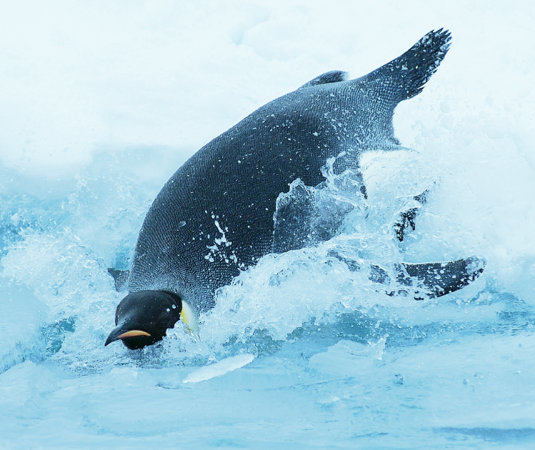

펭귄의 행동 가운데 사람이 가장 이해하기 어려운 것은 어미가 새끼를 잃었을 때에 나타난다.
극지방의 폭풍을 견뎌내지 못하거나 천적인 도둑 갈매기의 공격을 받아 새끼를 잃은 어미는,
아마도 슬픔을 달래기 위해, 다른 어미의 새끼를 도둑질하려 드는 것으로 알려져 있다.
이것은 자기 유전자를 퍼뜨리기 위한 본능에 기인한 것이 아니라 순수하게 감정적인 이유로 보인다.
이러한 행동을 다른 동물들은 거의 나타내지 않으며, 많은 과학자들을 놀라게 했다.
많은 이들이 지난 수십 년 동안, 동물도 사람과 비슷한 감정을 가지고 있다는
권리를 주장하기 위한 중요한 근거로 이것을 사용해 왔다.
흥미롭게도, 무리의 다른 암컷들은 어미가 이런 행동을 하면 싫어하고
원래 어미가 제 새끼를 지키도록 도우려 한다.
펭귄에 대해 또 특이할 만한 사실은 이들이 조류 가운데서는
드물게 사람을 겁내어 피하지 않는 종이라는 것이다.
사실 펭귄은 오래전부터 거리낌 없이 탐험가 무리에 접근해 오는 것으로 알려져 있었다.
천적으로는 바다표범이 있는데, 펭귄은 적의 공격을 피해 무리를 지어서 사냥한다.
